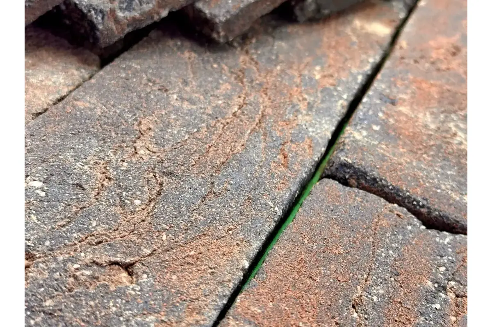

1. Materiais brutos em evidência
A estética "material à mostra" consolidou-se como referência nos projetos de maior destaque. Tijolinhos aparentes, concreto exposto e pedras naturais aparecem não como recurso decorativo, mas como declaração de intenção: o material é o acabamento. Nas fachadas, o Brick Rusticatto do Sertão e o Mescla Prime lideram por entregarem essa sensação de autenticidade com consistência de produto industrial.
2. Paletas escuras dominam a arquitetura contemporânea
Tonalidades como o Terra Negra e o Rusticatto Fumê, que eram consideradas arrojadas há alguns anos, tornaram-se escolhas recorrentes nos projetos de 2026. O escuro em fachada cria contraste dramático com vegetação, esquadrias metálicas e pisos externos claros. Esse efeito de profundidade visual valoriza especialmente construções com volumes geométricos fortes — sem precisar de nenhum outro elemento decorativo. O Rusticatto Terra Negra é uma das opções mais procuradas nessa paleta.

Em fachadas escuras, prefira rejunte em tom similar ao da peça — isso intensifica o efeito monolítico e reduz a "grelha" visual das juntas. Tons contrastantes funcionam melhor em paletas mais claras.
3. Combinação de texturas no mesmo plano
Projetos que combinam dois materiais com texturas distintas no mesmo volume — por exemplo, Cimentício Urban na parte superior e Brick Rosso Prime na base — ganham profundidade sem precisar de ornamentos extras. O segredo está em manter a paleta de cores próxima e variar apenas a textura, para que a transição pareça proposital e não improvisada.
4. Revestimento vertical como elemento estrutural
Pilares, empenas e platibandas revestidos de tijolinhos ou Rockface passam a ser o elemento central da composição, em vez de um complemento. Essa tendência inverte a lógica tradicional: em vez de a fachada emoldurar o revestimento, o revestimento organiza a fachada. Funciona especialmente bem com o Alpino e o Grigio, que têm linguagem mais neutra e deixam a forma falar mais alto.

5. Muro e jardim como extensão da fachada
A integração entre construção e paisagismo continua crescendo. Muros revestidos com o mesmo material da fachada eliminam a separação visual entre o que é construído e o que é cultivado. O Rockface Grigio e o Cimentício Urban têm sido muito usados nessa composição por manterem a linguagem contemporânea sem competir com a vegetação. Se está em dúvida entre as duas linhas, temos um comparativo completo entre Rockface e Cimentício.